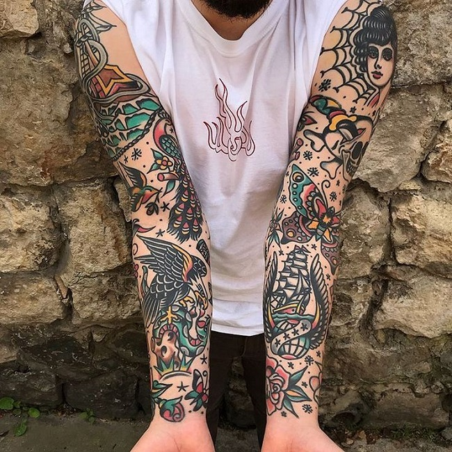
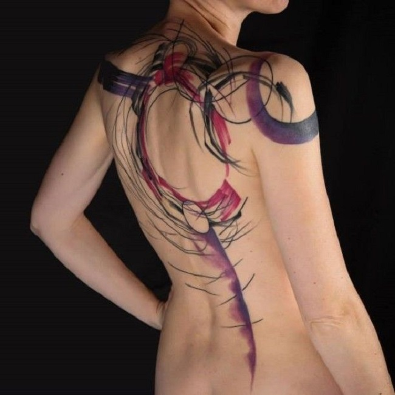

Existen una gran variedad de estilos de tattos, pero entre ellos los mas importantes y/o destacados son:
Tradicional americano u "Old school"
Los tatuajes del estilo old school son aquellos inspirados en los diseños realizados por los marineros en Estados Unidos en los primeros años de 1900. Los temas más populares de este estilo son las anclas, faros y elementos relacionados con el mar. La característica que mejor define a un tatuaje de estilo old school son el uso de perfiles gruesos y un colorido sin degradados. Generalmente las tonalidades usadas suelen ser intensas, generalmente rojos y azules. Actualmente es un estilo muy popular en los países anglosajones.

Neo tradicional o "New Traditional"
Es un estilo de tatuaje, producto de la evolución del estilo old school, al utilizar elementos de diseño y composición modernos. Son diseños que poseen similitudes con tatuajes old school, como la composición de los elementos gráficos y una aproximación, al menos en su inicio, a los temas y motivos característicos del old school (divas "pin up" águilas, cráneos, corazones, dagas, rosas, golondrinas, etc.), pero ahora con una visión distinta, gracias a las nuevas herramientas y técnicas desarrolladas en el ámbito del tatuaje. Actualmente, la temáticas de los diseños neo tradicionales han dejado de tomar inspiración de los diseños de tatuaje tradicionales, por lo que su catalogación dentro de este estilo se torna un tanto ambigua.
Puntillismo o "Dotwork"
Estilo nacido en Reino Unido y que se podría traducir como trabajo de punto. Se caracteriza por un punteado constante y por no hacer uso del color. Suelen ser tatuajes monocromáticos y con temáticas heredadas del old school o el new traditional. Tal vez sea uno de los estilos más populares actualmente. Técnicamente su elaboración requiere de menor capacidad, por lo que es uno de los estilos más comunes para comenzar a tatuar
Ornamental
Los tatuajes ornamentales son aquellos con un estilo geométrico y abstracto. Son estilos que son el resultado de mezclar temáticas geométricas realizadas con mezclas de estilos. Por ello podemos encontrar tatuajes ornamentales realizados con estéticas dotwork. Muchos profesionales suelen incluir en este estilo a todos aquellos tatuajes tribales o maoríes, aunque podríamos indicar que el estilo ornamental se ha desarrollado en las dos últimas décadas.
Black and Grey
Sin duda uno de los estilos más populares en la actualidad. Son los tatuajes realistas basados en tintas negras. También es posible hacer uso de tintas blancas, aunque no es lo más común. La calidad de los colores y la mayor variedad de tonos han provocado que este estilo haya perdido gran parte de seguidores.
Brush o Avantgarde
Estilo considerado moderno en la vertiente avantgarde del arte en la piel. Brush es pincel, claramente viene por imitar la técnica de pincel o pintura en la piel como si hablamos del "kanji" japonés, con lo cual se encuentra sumida por las dotes del tatuador o en muchos casos el mismo tatuador es artista o pintor. Comúnmente pueden diferenciarse por ser los tatuajes que parecen tatuados con un pincel. Son comunes en Holanda, Alemania e Inglaterra. La mayoría de veces no siguen un patrón ya que el artista tatuador crea una pieza de arte según el cliente demanda en muchos casos con la técnica "freehand" o "freestyle" con lo que el artista tatuador genera una pieza de arte en la piel como un cuadro en cualquier museo. Son generalmente tatuajes de gran tamaño y suelen estar compuestos en muchos casos por una abstracción o expresión del momento.

Nueva escuela o "New school"
La nueva escuela es un estilo de tatuaje originado en la década de 1970, influenciado por algunas características de la ilustración infantil, en los Estados Unidos. Este estilo se caracteriza por el uso de líneas gruesas en el delineado, colores vívidos, representaciones exageradas del objeto del diseño. La nueva escuela es conocida como un eslabón entre el tatuaje tradicional y la variedad de estilos que existen en la actualidad.